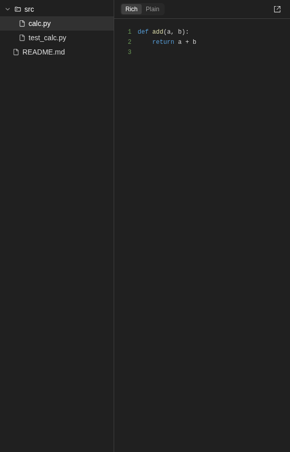

How to get to it
- Chat header: the panel toggle (
right-panel-toggle, block-drawer icon, right of the overviewibutton). At desktop width it shows or hides the drawer; at 1024 px or narrower it navigates to the panel page. - Drawer tab bar (
tabs-pane-header):conversation-tab-files,conversation-tab-commits. The ellipsis (tabs-pane-header >> testid=ellipsis-button) opens the menu withconversation-tabs-menu-open-<tab>andconversation-tabs-menu-pin-<tab>. - Direct URL
/conversations/<id>/panel(the phone panel page at 1024 px or narrower; wider, it redirects to/conversations/<id>with the drawer open). - Overview (
conversation-overview-toggle) → Changes row (conversation-overview-diffs) → Commits tab with Uncommitted expanded. - Workspace paths in agent messages written as inline code (
markdown-file-path-link), plus path chips in file-editor tool cards (file-path-chip) → Files tab with that file selected. - There is no command-menu entry or keyboard shortcut for the drawer or these tabs.
Before you start
Start with the common launch and health checks, then follow this family’s preconditions in order. Recipes share the fixtures and state named below.
Preconditions:
- Baseline state (launched, doctored,
onboard --skipdone) andcontrol-openhands llm preset deepseek(three short model turns, deepseek-flash). - A git fixture:
control-openhands fixture git-repo(creates<run>/workspace/qa-repowithREADME.md,src/calc.py,src/test_calc.pyand one commit byQA Fixture). - The conversation runs in that repo. From
/runcontrol-openhands browser click 'testid=open-workspace-button',control-openhands browser click 'testid=workspace-dropdown',control-openhands browser click 'role=button[name="+ Add Workspace"]'. The folder browser opens at<run>/private/home, so then runcontrol-openhands browser click 'testid=folder-browser-up'twice,control-openhands browser dblclick 'testid=folder-browser-entry-workspace',control-openhands browser dblclick 'testid=folder-browser-entry-qa-repo',control-openhands browser click 'testid=folder-browser-use'andcontrol-openhands browser click 'testid=workspace-launch-button'. The composer now shows aqa-repochip. Start with--stay, which keeps that chip; a plainconversation startnavigates home and loses it. - Seed changes with a prompt file, because the command contains quotes. Write
qa-f08-1.txt(anywhere outside the workspace) containing:In the current workspace directory run exactly this one bash command and then reply only "done": printf '# QA notes\n\nHello **world**\n' > qa-notes.md && printf '<h1>QA page</h1>\n' > qa-page.html && printf 'def sub(a, b):\n return a - b\n' >> src/calc.py && rm src/test_calc.py && printf 'PK\003\004' > qa-deck.pptx && head -c 64 /dev/urandom > qa-blob.bin && git status --short. Then runcontrol-openhands conversation start --stay --prompt "$(cat qa-f08-1.txt)" --wait --timeout 240. Read<id>from itsid(orcontrol-openhands browser url); the browser stays on/conversations/<id>. - Viewport desktop (1440×1000) unless a bullet says phone.
Behavior inventory
33 stable behavior IDs and their expected behavior
F08.panel-togglethe chat-header toggle (Show panel/Hide panel,aria-pressed) opens and closes the drawer; the first open shows Files. Read recipe ↓F08.tab-barthe tab bar (Files, Commits, Planner, Terminal, Browser, Usage; Task list only when the agent has one) switches the drawer body, and only the active tab shows its label. Clicking the active tab closes the drawer. Read recipe ↓F08.drawer-state-reloadafter a reload the drawer starts closed, and reopening it restores the last selected tab for that conversation. Read recipe ↓F08.tabs-pinthe pill on each menu row pins or unpins a tab. Unpinning the active tab selects another pinned one, and the choice persists across reloads. Read recipe ↓F08.drawer-resizedragging the chat/drawer divider resizes both panes (chat 30–80 %, default 50 %, stored indesktop-layout-panel-width). Read recipe ↓F08.vscode-linkaVSCodebutton at the right of the tab bar opens the editor in a new window; it is hidden when the runtime has no editor. (#17660 removed it and #18048 restored it.) Read recipe ↓F08.archived-disabledon an archived conversation the toggle is disabled with the tooltipUnavailable for Archives. Read recipe ↓F08.phone-panel-pageat 1024 px or narrower the toggle navigates to/conversations/<id>/panel, a full-screen page with a Back chevron, the same tab bar and the tab body. Read recipe ↓F08.panel-direct-urlopening/conversations/<id>/paneldirectly renders the panel page at 1024 px or narrower, and Back returns to the chat; wider, the URL is replaced with/conversations/<id>and the drawer opens beside the chat. Read recipe ↓F08.files-workspace-pathWorkspace: <working_dir>with the full path in its tooltip; the copy button turns intoCopied to clipboardfor about 2 s. Read recipe ↓F08.files-treea tree of folders, collapsed at first, and files. Clicking a file selects it and adds it to the open-file strip. Read recipe ↓F08.files-empty-workspacea workspace with no files showsNo files in workspace. Read recipe ↓F08.files-tree-togglethe list-tree button hides or shows the tree, and the choice persists per conversation. The tree is 224 px wide by default. Read recipe ↓F08.files-tree-resizedragging the divider between the tree and the preview resizes the tree (160–480 px, default 224) and the width persists across reloads (files-tab-tree-widthin localStorage). Read recipe ↓F08.files-open-tabsthe open-file strip, each tab with a close X. Closing the selected file selects a neighbour. Open files and the selection survive a reload and do not leak into other conversations. Read recipe ↓F08.files-no-selectionwith no file selected the pane readsSelect a file to view its contentsand the Rich/Plain toggle is absent. Read recipe ↓F08.files-rich-plainRich highlights code, renders Markdown and shows HTML in an iframe sandboxed without scripts. Plain shows highlighted source. The mode persists across reloads. Read recipe ↓F08.files-fallbacksimages render as<img>in Rich mode. Files with NUL bytes showBinary file – preview not available, and Office files showPreview isn't available for Word files.(or PowerPoint/Excel). Read recipe ↓F08.files-load-errora selected file that can no longer be read shows the error (Failed to read <path>: 404). Read recipe ↓F08.files-open-new-windowthe external-link icon opens the file from the workspace fileserver in a new browser tab. Read recipe ↓F08.files-refreshRefresh filesre-reads the file list and the selected file's content. Read recipe ↓F08.files-auto-refreshfiles the agent writes appear without a manual refresh. Read recipe ↓F08.files-open-from-chatclicking a workspace path in an agent (or user) message opens the drawer on Files with that file selected. Read recipe ↓F08.files-open-from-tool-chipthe path chip on a file-editor tool card (absolute path) opens the drawer on Files with that file selected. Read recipe ↓F08.commits-stateswith no commits and no changes the Commits tab showsNo commits yet. While the runtime is inactive it showsWaiting for runtime to start..., and while loadingLoading changes.... Read recipe ↓F08.uncommitted-changesthe top row reads-,Uncommittedand a file count; expanding it lists the changed paths. Read recipe ↓F08.commit-rowseach commit row shows the short SHA, subject, author (only when there are several authors) and relative time. Rows are single-open accordions, and new agent commits appear without a reload. Read recipe ↓F08.commits-capthe history loads the latest 50 commits; a longer history ends withShowing the latest 50 commits. Read recipe ↓F08.diff-view-modesexpanding a changed file shows its diff; the view-mode buttons (Old version,Diff,New version) switch between old, diff and new without page errors. Read recipe ↓F08.diff-markdown-previewa Markdown file in new (or old) mode renders as a prose preview. Read recipe ↓F08.diff-deleted-filea deleted working-tree file readsThis file was deleted. Its previous contents are no longer available for preview.Read recipe ↓F08.changes-from-overviewthe overview's Changes row opens the drawer on Commits with Uncommitted expanded and closes the overview. Read recipe ↓
Readable recipes
Read each script from top to bottom. Code is copied from the map; prose gives the action, expected observation, and conditions. <id>, <run> and similar placeholders stand for values from your own run. Short forms such as browser count continue the same control-openhands invocation; they are kept as documented.
Expected observations describe the recipe’s contract. Captures below selected recipes show representative real states from this snapshot; they do not mark every mapped behavior as passed. Follow cleanup before moving to another family.
No recipes match. Try another word or a behavior ID.
Open the drawer #
- Check
control-openhands browser attr 'testid=right-panel-toggle' aria-pressed(
false) and - Do
control-openhands browser tooltip 'testid=right-panel-toggle'(
Show panel). - Do
control-openhands browser click 'testid=right-panel-toggle' - Notefollowed by
- Check
control-openhands browser attr 'testid=right-panel-toggle' aria-label - Check
control-openhands browser visible 'testid=files-tab' - ExpectThe label is
Hide panel,aria-pressedistrue, and Files is visible with the workspace path and tree (browser screenshot --feature F08.panel-toggle --name drawer-open-files).
Switch and close by tab #
- Do
control-openhands browser click 'testid=conversation-tab-commits' - Wait
control-openhands browser wait 'testid=commit-list' --state visible --timeout 10000(the first open shows
Loading changes...for a moment, so an immediatebrowser visiblecan readfalse). - NoteClick
testid=conversation-tab-commitsagain.right-panel-togglearia-pressedbecomesfalseand - Check
control-openhands browser visible 'testid=tabs-pane-header'is
false. - NoteReopen with
right-panel-toggle.
Reload #
- NoteWith Commits selected, run
- Do
control-openhands browser reload - Check
control-openhands browser attr 'testid=right-panel-toggle' aria-pressed(
false; the drawer is closed). - NoteClick
testid=right-panel-toggle; - Check
control-openhands browser visible 'testid=commit-list'is
true.
Overflow menu #
- Do
control-openhands browser click 'testid=tabs-pane-header >> testid=ellipsis-button' - Check
control-openhands browser testids --filter conversation-tabs-menu - Notethere is one open row and one pin row per tab.
- Do
control-openhands browser click 'testid=conversation-tabs-menu-open-usage' - Check
control-openhands browser count 'testid=conversation-tabs-menu-open-usage'is
0(menu closed) and the bar's active label isUsage. - NoteReopen the menu and run
- Do
control-openhands browser mouse-click 560 600(over the chat); the menu count is
0.
Pin/unpin #
- NoteWith Usage active, open the menu and run
- Do
control-openhands browser click 'testid=conversation-tabs-menu-pin-usage' - Check
control-openhands browser attr 'testid=conversation-tabs-menu-pin-usage' aria-label(
Pin tab to bar;aria-pressedisfalse). - NoteClose the menu with
browser mouse-click 560 600, then run - Check
control-openhands browser count 'testid=tabs-pane-header >> testid=conversation-tab-usage' - ExpectThe count is
0and Planner is now active. - Do
control-openhands browser reload - Noteand reopen the drawer; the count is still
0. - NoteTo restore, open the menu, click
testid=conversation-tabs-menu-pin-usage(labelUnpin tab from bar), then - Do
control-openhands browser click 'testid=conversation-tabs-menu-open-files' - ExpectThe usage tab count is
1again.
Resize #
- ExpectThe divider has no test id; its grip is the first
.cursor-ew-resizeon the page (the second is the Files tree divider). - NoteWith the drawer open,
- Check
control-openhands browser bbox 'testid=chat-interface' - Check
control-openhands browser bbox 'testid=tabs-pane-header'are about 570 px wide each and
- Do
control-openhands browser eval "localStorage.getItem('desktop-layout-panel-width')"is
"50". - Do
control-openhands browser drag '.cursor-ew-resize >> nth=0' --by 200,0 - Note: the chat is 770 px, the drawer about 369 px and the key about
67.5.--by 900,0clamps at"80",--by -1200,0at"30"(chat 342 px), and afterbrowser reloadplus the toggle the chat is still 342 px. - NoteRestore with
- Do
control-openhands browser drag '.cursor-ew-resize >> nth=0' --by 228,0(chat 570 px, key
"50").
VS Code link #
- NoteBlocked in a runtime without a running VS Code server:
- Check
control-openhands browser count 'testid=drawer-vscode-link'is
0(hidden, as designed), and - Check
control-openhands api GET /api/vscode/status - Noteexplains why (
enabled: false, orrunning: falsewhen the agent-server has no editor binary, as in these stacks; see F26 Gotchas). - ExpectIt needs a runtime with
enable_vscodeand a running editor, on an origin that serves/vscode/.
Archived #
- NoteBlocked locally: archived status comes from a Cloud sandbox (
sandbox_status). - NoteOn such a conversation,
browser enabled 'testid=right-panel-toggle'should befalseandbrowser tooltip 'testid=right-panel-toggle'should readUnavailable for Archives.
Workspace path #
- Check
control-openhands browser attr 'testid=files-tab-workspace-path-value' title(ends in
/workspace/qa-repo). - NoteClick
testid=files-tab-workspace-path >> testid=copy-to-clipboard. - NoteImmediately afterwards,
- Check
control-openhands browser attr 'testid=files-tab-workspace-path >> testid=copy-to-clipboard' aria-labelis
Copied to clipboardandbrowser enabledon the same button isfalse. - Check
control-openhands browser clipboardreturns the full path.
- NoteAbout 3 s later the label is
Copy to clipboardagain.
Tree #
- Do
control-openhands browser click 'testid=files-tab-refresh' - Notefirst (see Gotchas: files the agent made with bash are missing until a refresh).
- Check
control-openhands browser attr 'testid=file-tree-dir-src' aria-expanded(
false), - Do
control-openhands browser click 'testid=file-tree-dir-src'(now
true) and - Do
control-openhands browser click 'testid=file-tree-file-src/calc.py' - Check
control-openhands browser text 'testid=file-content-viewer-highlighted'shows the 4 lines
def add…return a - b, andtestid=file-quick-row-item-src/calc.pyexists.

Files tree with src expanded and calc.py selected beside a highlighted Python code viewer.
Representative documentation capture, not a complete run of this recipe or family. Captured on an isolated local backend at desktop viewport using the current main checkout. Files came from control-openhands fixture git-repo. No agent edits or uncommitted-change flow was exercised. Doctor passed and pageErrors were zero. Error history contains GET /api/llm/balance 404 responses on this local backend; this is not a clean-errors claim.
How this screenshot was taken
canvas: 1.26.0 · agent server: 1.53.0 · sdk: 1.53.0 · automation: 1.19.0
OH_VERIFY_RUN="$OH_VERIFY_RUN" control-openhands fixture git-repo
OH_VERIFY_RUN="$OH_VERIFY_RUN" control-openhands conversation start --workspace qa-repo --prompt 'Reply with a markdown table with columns Step and Result and exactly two rows: Setup | ready, Reply | hello. Then a python code block containing print(1). Do not run any tools.' --wait --timeout 180
OH_VERIFY_RUN="$OH_VERIFY_RUN" control-openhands conversation events <conversation-id> --kinds ActionEvent --last 10
OH_VERIFY_RUN="$OH_VERIFY_RUN" control-openhands browser snapshot testid=agent-message
OH_VERIFY_RUN="$OH_VERIFY_RUN" control-openhands browser type testid=chat-input /
OH_VERIFY_RUN="$OH_VERIFY_RUN" control-openhands browser snapshot testid=slash-command-menu --max-lines 50
OH_VERIFY_RUN="$OH_VERIFY_RUN" control-openhands browser press Escape
OH_VERIFY_RUN="$OH_VERIFY_RUN" control-openhands browser fill testid=chat-input ''
OH_VERIFY_RUN="$OH_VERIFY_RUN" control-openhands browser click 'testid=chat-pane-header >> testid=ellipsis-button'
OH_VERIFY_RUN="$OH_VERIFY_RUN" control-openhands browser snapshot testid=conversation-name-context-menu
OH_VERIFY_RUN="$OH_VERIFY_RUN" control-openhands browser click 'testid=conversation-name-context-menu >> testid=display-cost-button'
OH_VERIFY_RUN="$OH_VERIFY_RUN" control-openhands browser wait testid=usage-panel
OH_VERIFY_RUN="$OH_VERIFY_RUN" control-openhands browser click testid=conversation-tab-files
OH_VERIFY_RUN="$OH_VERIFY_RUN" control-openhands browser wait testid=files-tab
OH_VERIFY_RUN="$OH_VERIFY_RUN" control-openhands browser click testid=file-tree-dir-src
OH_VERIFY_RUN="$OH_VERIFY_RUN" control-openhands browser click testid=file-tree-file-src/calc.py
OH_VERIFY_RUN="$OH_VERIFY_RUN" control-openhands browser snapshot testid=files-tab
OH_VERIFY_RUN="$OH_VERIFY_RUN" control-openhands browser testids testid=files-tab
OH_VERIFY_RUN="$OH_VERIFY_RUN" control-openhands browser eval '(() => { let n=document.querySelector('"'"'[data-testid=files-tab-tree]'"'"'); const a=[]; for(let i=0;n&&i<4;i++,n=n.parentElement)a.push({tag:n.tagName,testid:n.dataset.testid,children:Array.from(n.children).map(c=>({tag:c.tagName,testid:c.dataset.testid}))}); return a; })()'
OH_VERIFY_RUN="$OH_VERIFY_RUN" control-openhands browser screenshot 'testid=files-tab-tree >> xpath=..' --feature F08.files-tree --name workspace-file-treeTree toggle #
- Check
control-openhands browser bbox 'testid=files-tab-tree'(width
224). - Do
control-openhands browser click 'testid=file-quick-row-tree-toggle' - Check
control-openhands browser attr 'testid=file-quick-row-tree-toggle' aria-label(
Show file tree) and - Check
control-openhands browser count 'testid=files-tab-tree'(
0). - NoteReload and reopen the drawer: the count is still
0. - NoteClick the toggle again to restore (count
1).
Tree resize #
- Do
control-openhands browser drag 'testid=files-tab-tree-resize-handle >> .cursor-ew-resize' --by 100,0 - Note
browser bbox 'testid=files-tab-tree'is324wide and - Do
control-openhands browser eval "localStorage.getItem('files-tab-tree-width')"is
"324".--by 500,0clamps at480,--by -600,0at160, and the width survivesbrowser reloadplus the toggle. - NoteRestore with
--by 64,0(224).
Rich/Plain #
- NoteClick
testid=file-tree-file-qa-notes.md;testid=file-content-viewer-markdownexists. - NoteClick
testid=file-tree-file-qa-page.html, then run - Check
control-openhands browser attr 'testid=file-content-viewer-iframe' sandbox(
allow-same-origin) and - Do
control-openhands browser eval "document.querySelector('[data-testid=file-content-viewer-iframe]').contentDocument.body.innerText"(
QA page). - Do
control-openhands browser click 'testid=files-tab-content-mode-toggle-option-plain' - Check
control-openhands browser text 'testid=files-tab-content >> testid=file-content-viewer-highlighted'reads
1<h1>QA page</h1>. - ExpectAfter
browser reloadand reopening, - Check
control-openhands browser attr 'testid=files-tab-content-mode-toggle-option-plain' aria-checkedis
true. - NoteSwitch back with
testid=files-tab-content-mode-toggle-option-rich.
Open in new window #
- NoteWith
qa-page.htmlselected, run - Do
control-openhands browser click 'testid=files-tab-open-in-new-window' - Do
control-openhands browser tabs - NotePage 1's URL is
/api/conversations/<id>/workspace/qa-page.html?v=<n>. - Do
control-openhands browser tab 1 - Check
control-openhands browser text 'body'(
QA page) and - Do
control-openhands browser close-tab 1
Open-file strip #
- NoteWith several files opened, run
- Check
control-openhands browser attr 'testid=file-quick-row-item-qa-page.html' title(the path).
- NoteSelect
qa-notes.mdwith - Do
control-openhands browser click 'testid=file-quick-row-item-qa-notes.md' - Notethen close it with
- Do
control-openhands browser click 'testid=file-quick-row-close-qa-notes.md' - Do
control-openhands browser eval "[...document.querySelectorAll('[data-testid^=file-quick-row-item-]')].filter(e=>e.getAttribute('aria-selected')==='true').map(e=>e.dataset.testid)" - Notenames the neighbour.
- NoteRun
browser reload, reopen the drawer and - Check
control-openhands browser text 'testid=file-quick-row' - Note: the same files remain.
- NoteOpening a different conversation (see Commits empty state) shows no quick-row items:
browser text 'testid=file-quick-row'is empty.browser testidsomits strip tabs scrolled out of view; count them withbrowser eval "[...document.querySelectorAll('[data-testid^=file-quick-row-item-]')].length".
No selection #
- NoteClose every open file with its
file-quick-row-close-<path>button. - Check
control-openhands browser text 'testid=files-tab-content'reads
Select a file to view its contents, and - Check
control-openhands browser count 'testid=files-tab-content-mode-toggle'is
0.
Second agent turn: commit, binaries, auto-refresh #
- NoteKeep Files open with
qa-notes.mdselected in Rich mode. - NoteWrite
qa-f08-2.txtwith:In the current workspace directory run exactly this one bash command and then reply only "done": printf 'BIN\000\001' > qa-nul.bin && printf 'PK\003\004\000\000' > qa-real.docx && python3 -c "import base64;open('qa-dot.png','wb').write(base64.b64decode('iVBORw0KGgoAAAANSUhEUgAAAAEAAAABCAYAAAAfFcSJAAAADUlEQVR42mP8z8BQDwAEhQGAhKmMIQAAAABJRU5ErkJggg=='))" && printf '\n- edited by agent\n' >> qa-notes.md && git add qa-notes.md && git -c user.name=QA-Agent -c user.email=qa@example.invalid commit -qm 'QA agent commit' && git log --oneline. - Wait
control-openhands conversation start --stay --prompt "$(cat qa-f08-2.txt)" --wait --timeout 240 - Check
control-openhands browser testids 'testid=files-tab-tree' - Check
control-openhands browser text 'testid=file-content-viewer-markdown' - NoteExpected:
qa-nul.bin,qa-real.docxandqa-dot.pngare listed, and the preview ends withedited by agent. - NoteKnown failure (reproduced 2026-10-06): neither changes until Refresh, because the auto-refresh hook skips the file queries for shell commands on purpose (see Gotchas).
- NoteRepro candidate, not yet filed; a report would ask to revisit that choice.
- NoteClick
testid=files-tab-refreshonce: the list gains the three files and the open preview ends withedited by agent.
Fallbacks #
- ExpectAfter a refresh, click
testid=file-tree-file-qa-nul.bin(testid=file-content-viewer-binary-fallback, textBinary file – preview not available). - NoteThen click
testid=file-tree-file-qa-real.docx(testid=file-content-viewer-unsupported-document,Preview isn't available for Word files.). - NoteThen click
testid=file-tree-file-qa-dot.pngand run - Do
control-openhands browser eval "document.querySelector('[data-testid=file-content-viewer-image] img').naturalWidth"(
1). - NoteIn Plain mode the PNG shows the binary fallback.
qa-deck.pptxandqa-blob.binfrom the first prompt have no NUL byte and render as text (see Gotchas).
File-editor edits auto-refresh; deleted file errors #
- NoteKeep Files open with
testid=file-tree-file-qa-blob.binselected. - Wait
control-openhands conversation start --stay --prompt 'Do two steps, then reply only "done". Step 1: run the bash command: rm qa-blob.bin. Step 2: use your file editor tool (not bash) to create the file qa-editor.txt in the current workspace directory with the single line: created by file editor' --wait --timeout 240 - NoteWithout clicking Refresh,
- Check
control-openhands browser count 'testid=file-tree-file-qa-editor.txt'is
1andbrowser count 'testid=file-tree-file-qa-blob.bin'is0(the editor observation refetches the whole list).qa-blob.binstays in the open-file strip, and the same observation re-reads the open file: - Check
control-openhands browser text 'testid=file-content-viewer-error'reads
Failed to read qa-blob.bin: 404and - Check
control-openhands browser network --filter qa-blobshows the 404 (
browser screenshot --feature F08.files-load-error --name deleted-open-file).
Open from chat #
- Check
control-openhands conversation start --stay --prompt 'Without running any tool, reply with exactly this text and nothing else: See - Notesrc/calc.py
for the code.' --wait --timeout 180. - NoteClose the drawer, then run
- Do
control-openhands browser click 'testid=agent-message >> nth=-1 >> testid=markdown-file-path-link' - Note
right-panel-togglearia-pressedturnstrue,testid=files-tabis visible andfile-quick-row-item-src/calc.pyis the selected tab. - ExpectThe same path in the prompt bubble works too: close the drawer and click
'testid=user-message >> testid=markdown-file-path-link'. - NotePhone: select another file (
control-openhands browser click 'testid=file-quick-row-item-qa-notes.md'), run - Do
control-openhands browser viewport phone - Notethen the same agent-message click with
--expect-url '/panel$': the URL becomes/conversations/<id>/panel,browser visible 'testid=files-tab'istrueand - Check
control-openhands browser attr 'testid=file-quick-row-item-src/calc.py' aria-selectedis
true(browser screenshot --feature F08.files-open-from-chat --name phone-after-click). - NoteReturn with
- Do
control-openhands browser viewport desktop - Note: the app replaces
/panelwith/conversations/<id>(control-openhands browser wait-url '/conversations/[^/]+$') and shows the drawer beside the chat.
Tool-card path chip #
- ExpectAfter the file-editor turn above, close the drawer and expand its tool group and card:
- Check
control-openhands browser click 'text=2 actions completed' - Do
control-openhands browser click 'role=region[name="Collapse actions"] >> role=button[name="Expand"] >> nth=-1'(the
Create qa-editor.txtcard). - Check
control-openhands browser text 'testid=file-path-chip'is the absolute
<run>/workspace/qa-repo/qa-editor.txt. - Do
control-openhands browser click 'testid=file-path-chip' - Note:
right-panel-togglearia-pressedturnstrue, the selected strip tab isfile-quick-row-item-qa-editor.txt(relative) andbrowser text 'testid=files-tab-content'ends withcreated by file editor.
Commits list #
- NoteClick
testid=conversation-tab-commitsand run - Check
control-openhands browser text 'testid=commit-list' - ExpectAfter the first prompt it reads
-,Uncommitted,6 files, then4bf8272-style SHA,Initial fixture commitand… ago; after the second promptQA agent commitappears above it, with author namesQA-AgentandQA Fixtureshown because there are now two authors. - Do
control-openhands browser click 'testid=uncommitted-changes-row-toggle' - Check
control-openhands browser text 'testid=uncommitted-changes-row-content'(the changed paths;
aria-expandedistrue). - Arrange
control-openhands browser click 'testid=commit-row >> has-text=Initial fixture commit >> testid=commit-row-toggle' - NoteUncommitted's
aria-expandedturnsfalse, and - Check
control-openhands browser text 'testid=commit-row-content'lists
README.md,src/calc.py,src/test_calc.py. - ExpectAfter the third prompt the Uncommitted count is
8 files.
Diff modes #
- NoteIn the expanded Uncommitted row, run
- Do
control-openhands browser click 'testid=uncommitted-changes-row-content >> testid=file-diff-viewer-outer >> has-text=src/calc.py >> testid=collapse' - Check
control-openhands browser text 'testid=uncommitted-changes-row-content >> testid=file-diff-viewer-outer >> has-text=src/calc.py >> testid=editor-container'shows the added
def sublines, andview-mode-diffhasaria-pressedtrue. - ExpectThe row's buttons are named:
- Check
control-openhands browser snapshot 'testid=uncommitted-changes-row-content >> testid=file-diff-viewer-outer >> has-text=src/calc.py'lists
button "Old version",button "Diff" [pressed],button "New version"andbutton "Collapse"(the samecollapsebutton readsExpandwhile the row is collapsed), so… >> role=button[name="Old version"]works as well as the test id. - NoteClick
… >> testid=view-mode-old(2 lines), then… >> testid=view-mode-new(4 lines), thenview-mode-diff. - Check
control-openhands browser errors --app-only - Notebefore and after: each collapse and each diff→old switch adds
TextModel got disposed before DiffEditorWidget model got reset(fail, #17567).
Markdown preview #
- NoteIn this order
qa-notes.mdis already committed, so check it in theQA agent commitrow: - Do
control-openhands browser click 'testid=commit-row >> has-text=QA agent commit >> testid=commit-row-toggle' - Notethen with
F='testid=commit-row >> has-text=QA agent commit >> testid=file-diff-viewer-outer >> has-text=qa-notes.md'click"$F >> testid=collapse"and"$F >> testid=view-mode-new". - Check
control-openhands browser count "$F >> testid=markdown-preview"is
1, rendering<h1>QA notes</h1>, world in bold and theedited by agentlist item. (Before the second prompt the same check works undertestid=uncommitted-changes-row-content.) Re-expand Uncommitted withuncommitted-changes-row-togglefor the next bullet.
Deleted file #
- NoteExpand
src/test_calc.pyin Uncommitted. - Check
control-openhands browser text 'testid=uncommitted-changes-row-content >> testid=file-diff-viewer-outer >> has-text=src/test_calc.py >> testid=file-deleted-message'reads
This file was deleted. Its previous contents are no longer available for preview.
From the overview #
- NoteWith the drawer closed, run
- Do
control-openhands browser click 'testid=conversation-overview-toggle' - Do
control-openhands browser click 'testid=conversation-overview-diffs'(its siblings
conversation-overview-diffs-additions/-deletionsshow+N/-N; deleted files are not counted).right-panel-togglearia-pressedistrue,testid=commit-listis visible,uncommitted-changes-row-togglehasaria-expandedtrueandtestid=conversation-overview-panelis hidden. - ExpectAfter
browser reloadand the toggle, Commits is still selected.
Empty states #
- Arrange
control-openhands fixture folder - Notewhich makes
<run>/workspace/qa-folder, a plain folder (no.git) withnotes.md; by the time the conversation has run it holds an empty.git(seen live; not created by the prompt), so it ends up a repo with no commits. - Do
control-openhands browser goto /(the browser is on the qa-repo conversation) and pick it with the workspace picker as in Preconditions (
folder-browser-entry-qa-folder). - Wait
control-openhands conversation start --stay --prompt 'Run exactly this bash command, then reply only "done": rm notes.md && git status --short' --wait --timeout 180 - NoteOpen the drawer and click
testid=conversation-tab-commits; - Check
control-openhands browser count 'text="No commits yet"'is
1(browser screenshot --feature F08.commits-states --name no-commits). - NoteOn Files, click
testid=files-tab-refresh; - Check
control-openhands browser text 'testid=files-tab-tree'reads
No files in workspace.Loading changes...(testid=commits-tab-status) shows briefly on the first Commits open after a load: on/conversations/<id>with Files selected,browser reload, open the drawer, then - Check
control-openhands browser click 'testid=conversation-tab-commits' --observe 'testid=commits-tab-status' --observe-ms 4000 - Noterecords
Loading changes...for a few ms.Waiting for runtime to start...(agent state init/loading/error) was not reached:service stop agent-serverandrestartboth leftNo commits yeton screen.
Commit cap #
- NoteArrange more than 50 commits in the fixture (read-only for the UI):
for i in $(seq 1 50); do git -C "$OH_VERIFY_RUN/workspace/qa-repo" -c user.name=QA-Bulk -c user.email=qa@example.invalid commit -q --allow-empty -m "QA bulk $i"; done. - NoteOn the qa-repo conversation (
control-openhands browser goto /conversations/<id>; Empty states left the qa-folder conversation) runbrowser reload, open the drawer on Commits and wait fortestid=commit-list. - Check
control-openhands browser text 'testid=commit-list-cap-notice'reads
Showing the latest 50 commitsandbrowser count 'testid=commit-row'is50. - NoteDo this last: it changes the commit list the other bullets read.
Phone panel page #
- Do
control-openhands browser viewport phone - Noteon
/conversations/<id>, then - Check
control-openhands browser click 'testid=right-panel-toggle' --expect-url '/panel$' - Check
control-openhands browser bbox 'testid=files-tab' - Notegives
insideViewporttrueandpageHorizontalOverflowfalse, with Commits diffs usable at 390 px (browser screenshot --feature F08.phone-panel-page --name panel). - Check
control-openhands browser attr 'testid=conversation-mobile-panel-back' aria-labelis
Back. - Check
control-openhands browser click 'testid=conversation-mobile-panel-back' --expect-url '/conversations/[^/]+$' - Notethe chat is visible.
- NoteReturn with
- Do
control-openhands browser viewport desktop
Direct panel URL #
- NoteAt desktop run
- Do
control-openhands browser goto /conversations/<id>/panel - ExpectThe app replaces the URL with
/conversations/<id>(thegotoresult already shows it;control-openhands browser urlconfirms), - Check
control-openhands browser count 'testid=conversation-mobile-panel-back'is
0,browser visible 'testid=chat-interface'istrueandright-panel-togglearia-pressedistrue(the drawer opens beside the chat;browser screenshot --feature F08.panel-direct-url --name desktop-redirect). - Do
control-openhands browser viewport phone - Noteand the same
goto: the URL keeps/panel, theconversation-mobile-panel-backcount is1andchat-interfaceis not visible. - Check
control-openhands browser click 'testid=conversation-mobile-panel-back' --expect-url '/conversations/[^/]+$'returns to the chat.
- NoteReturn with
- Do
control-openhands browser viewport desktop
Errors #
- ExpectAfter each group run
- Check
control-openhands browser errors --app-only - ExpectThe Monaco disposal error above belongs to this family. 404s on
/api/llm/balanceand.agents_tmp/downloads come from the Usage and Planner tabs (F27).
Gotchas and known limits
- When the drawer is closed, its tabs stay mounted at width 0.
browser count 'testid=files-tab'is1even then, so assert withbrowser visibleorright-panel-togglearia-pressed. - The tab row is a
tablist "Conversation panels"ofrole=tabcontrols, each named after its tab even when inactive (#17612), sorole=tab[name="Commits"]finds the Commits tab whether or not it is active;role=button[name="Commits"]finds nothing.aria-selectedmarks the selected tab. Theconversation-tab-*test ids still work. - The tab row ends with the ellipsis menu (
Customize tabs), then theVSCodebutton (drawer-vscode-link, namedOpen in VS Code) when the runtime reports a running editor. #17660 removed that button and #18048 restored it, so on a checkout between the two the drawer has no editor control at all. - The overflow menu is not a
role=menu. Escape closes it and returns focus to the tab bar'sellipsis-button, both in the desktop drawer and on the phone/panelpage; choosing a row or an outside click (browser mouse-click) closes it too. - The Files list and the open preview do not follow bash edits:
use-auto-refresh-files-on-edit.tsrefreshes the file queries only for file-editor observations, and its comment says shell observations skip them on purpose (so that every shell command does not reload canvas iframes). This map still expects files the agent writes to appear (F08.files-auto-refresh), so the bash case stays a fail row. Clickfiles-tab-refreshonce before asserting on files the agent made with the shell. Since #18032 that one click also re-reads the open file (the content fetch revalidates instead of using the browser HTTP cache, and the rich preview gets a new?v=), and a page reload shows the current body without a click. - The chat also fetches the file list (to linkify paths). A conversation page left open while the agent works can therefore show a stale tree the moment the drawer first opens.
- Binary detection is a NUL-byte sniff of the first 8 KB, and the Office message also needs that sniff to trip. A 4-byte
PK\003\004"pptx" or random bytes without a NUL render as text in the plain viewer. Fixtures must contain a NUL. control-openhands fixture folderwrites a plain folder withnotes.md, but by the time the conversation has run the folder holds an empty.git, so a conversation that leavesnotes.mdin place showsUncommitted 1 filerather than the empty state. Delete it first (as in the recipe).- Diff views are Monaco.
testid=file-diff-viewerandfile-single-viewerare not on the DOM; read text throughtestid=editor-container. The narrow drawer falls back to an inline (not side-by-side) diff. The view-mode buttons are namedOld version,DiffandNew version, andcollapseis namedExpandorCollapseafter its state (#18033). browser eval "navigator.clipboard.readText()"hangs for about 2 minutes (no clipboard permission). Usecontrol-openhands browser clipboardto read what Copy wrote.browser click ... --observeaccepts the usual selector syntax (testid=...).- Two
.cursor-ew-resizegrips sit in the conversation page (chat/drawer, then the Files tree); scope the tree one withtestid=files-tab-tree-resize-handle. - At phone width, chat path links (and the agent's
canvas_ui_controltab and file requests, throughsrc/services/canvas-ui.ts) navigate to/conversations/<id>/panel(#18045); at desktop width they open the side drawer and the URL does not change. A/panelURL above 1024 px redirects to/conversations/<id>, so a bullet that leaves the phone viewport on/panelends on the chat route. - If the agent's terminal resets mid-command ("terminal session was reset", for example after a
restart), the agent reruns the command. Check the workspace withgit statusthrough a second prompt rather than trusting the first observation. Runs no longer share a tmux server (OpenHands/OpenHands#17946). - Known issue: #17567 (Monaco disposed-model page error on diff unmount; it also fires on collapse and on a diff→old switch).
Source paths: src/components/features/conversation/conversation-tabs/, src/components/features/conversation/right-panel-toggle.tsx, src/components/features/conversation/conversation-main/, src/routes/conversation.tsx, src/hooks/use-conversation-panel-route.ts, src/routes/conversation-panel.tsx, src/routes/files-tab.tsx, src/components/features/files-tab/, src/hooks/query/use-workspace-files.ts, src/hooks/query/use-workspace-file-content.ts, src/hooks/use-auto-refresh-files-on-edit.ts, src/routes/commits-tab.tsx, src/components/features/diff-viewer/, src/services/canvas-ui.ts.